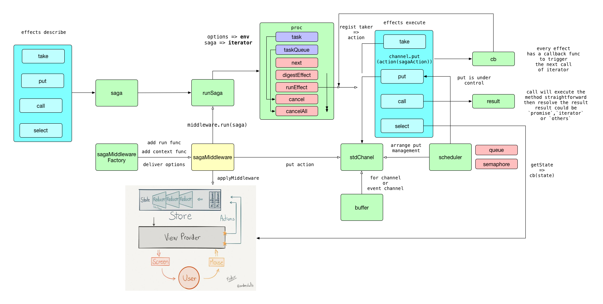

<!DOCTYPE html>
<html lang="en">

<!-- Head tag -->
<head><meta name="generator" content="Hexo 3.8.0">
    <meta charset="utf-8">
    <meta http-equiv="X-UA-Compatible" content="IE=edge">
    <meta name="google-site-verification" content="xBT4GhYoi5qRD5tr338pgPM5OWHHIDR6mNg1a3euekI">
    <meta name="viewport" content="width=device-width, initial-scale=1">
    <meta name="description" content>
    <meta name="keyword" content>
    <link rel="shortcut icon" href="/codinglobster-blog/img/favicon.ico">

    <title>
        
          redux-saga-source-code-read - Jeff的博客 | Jeff&#39;s Blog
        
    </title>

    <link rel="canonical" href="https://codinglobster.github.io/codinglobster-blog/2018/07/04/redux-saga-source-code-read/">

    <!-- Bootstrap Core CSS -->
    <link rel="stylesheet" href="/codinglobster-blog/css/bootstrap.min.css">

    <!-- Custom CSS -->
    <link rel="stylesheet" href="/codinglobster-blog/css/hux-blog.min.css">

    <!-- Pygments Highlight CSS -->
    <link rel="stylesheet" href="/codinglobster-blog/css/highlight.css">

    <!-- Custom Fonts -->
    <!-- <link href="https://maxcdn.bootstrapcdn.com/font-awesome/4.3.0/css/font-awesome.min.css" rel="stylesheet" type="text/css"> -->
    <!-- Hux change font-awesome CDN to qiniu -->
    <link href="https://cdn.staticfile.org/font-awesome/4.5.0/css/font-awesome.min.css" rel="stylesheet" type="text/css">


    <!-- Hux Delete, sad but pending in China
    <link href='http://fonts.googleapis.com/css?family=Lora:400,700,400italic,700italic' rel='stylesheet' type='text/css'>
    <link href='http://fonts.googleapis.com/css?family=Open+Sans:300italic,400italic,600italic,700italic,800italic,400,300,600,700,800' rel='stylesheet' type='text/
    css'>
    -->


    <!-- HTML5 Shim and Respond.js IE8 support of HTML5 elements and media queries -->
    <!-- WARNING: Respond.js doesn't work if you view the page via file:// -->
    <!--[if lt IE 9]>
        <script src="https://oss.maxcdn.com/libs/html5shiv/3.7.0/html5shiv.js"></script>
        <script src="https://oss.maxcdn.com/libs/respond.js/1.4.2/respond.min.js"></script>
    <![endif]-->

    <!-- ga & ba script hoook -->
    <script></script>
</head>


<!-- hack iOS CSS :active style -->
<body ontouchstart="">

    <!-- Navigation -->
<nav class="navbar navbar-default navbar-custom navbar-fixed-top">
    <div class="container-fluid">
        <!-- Brand and toggle get grouped for better mobile display -->
        <div class="navbar-header page-scroll">
            <button type="button" class="navbar-toggle">
                <span class="sr-only">Toggle navigation</span>
                <span class="icon-bar"></span>
                <span class="icon-bar"></span>
                <span class="icon-bar"></span>
            </button>
            <a class="navbar-brand" href="/codinglobster-blog/">codinglobster&#39;s Blog</a>
        </div>

        <!-- Collect the nav links, forms, and other content for toggling -->
        <!-- Known Issue, found by Hux:
            <nav>'s height woule be hold on by its content.
            so, when navbar scale out, the <nav> will cover tags.
            also mask any touch event of tags, unfortunately.
        -->
        <div id="huxblog_navbar">
            <div class="navbar-collapse">
                <ul class="nav navbar-nav navbar-right">
                    <li>
                        <a href="/codinglobster-blog/">Home</a>
                    </li>

                    

                        
                    

                        
                        <li>
                            <a href="/codinglobster-blog/about/">About</a>
                        </li>
                        
                    

                        
                        <li>
                            <a href="/codinglobster-blog/archives/">Archives</a>
                        </li>
                        
                    

                        
                        <li>
                            <a href="/codinglobster-blog/tags/">Tags</a>
                        </li>
                        
                    
                    
                </ul>
            </div>
        </div>
        <!-- /.navbar-collapse -->
    </div>
    <!-- /.container -->
</nav>
<script>
    // Drop Bootstarp low-performance Navbar
    // Use customize navbar with high-quality material design animation
    // in high-perf jank-free CSS3 implementation
    var $body   = document.body;
    var $toggle = document.querySelector('.navbar-toggle');
    var $navbar = document.querySelector('#huxblog_navbar');
    var $collapse = document.querySelector('.navbar-collapse');

    $toggle.addEventListener('click', handleMagic)
    function handleMagic(e){
        if ($navbar.className.indexOf('in') > 0) {
        // CLOSE
            $navbar.className = " ";
            // wait until animation end.
            setTimeout(function(){
                // prevent frequently toggle
                if($navbar.className.indexOf('in') < 0) {
                    $collapse.style.height = "0px"
                }
            },400)
        }else{
        // OPEN
            $collapse.style.height = "auto"
            $navbar.className += " in";
        }
    }
</script>


    <!-- Main Content -->
    
<!-- Image to hack wechat -->
<!--  -->
<!--  -->

<!-- Post Header -->
<style type="text/css">
    header.intro-header{
        background-image: url('redux-saga.png')
    }
</style>
<header class="intro-header">
    <div class="container">
        <div class="row">
            <div class="col-lg-8 col-lg-offset-2 col-md-10 col-md-offset-1">
                <div class="post-heading">
                    <div class="tags">
                        
                          <a class="tag" href="/codinglobster-blog/tags/#react" title="react">react</a>
                        
                          <a class="tag" href="/codinglobster-blog/tags/#redux" title="redux">redux</a>
                        
                    </div>
                    <h1>redux-saga-source-code-read</h1>
                    <h2 class="subheading">redux-saga源码试探阅读</h2>
                    <span class="meta">
                        Posted by codinglobster on
                        2018-07-04
                    </span>
                </div>
            </div>
        </div>
    </div>
</header>

<!-- Post Content -->
<article>
    <div class="container">
        <div class="row">

    <!-- Post Container -->
            <div class="
                col-lg-8 col-lg-offset-2
                col-md-10 col-md-offset-1
                post-container">

                <h2 id="前言"><a href="#前言" class="headerlink" title="前言"></a>前言</h2><p>在使用<code>dva</code>框架的过程中，我一直很好奇<code>effect</code>是如何实现将异步代码写成了同步代码的形式，直到看到了<code>dva知识图谱</code>才了解到，异步处理这块是交由<code>redux-saga</code>来处理的，所以就有了这篇试探阅读代码，来看看到底自己能不能看懂这优雅的异步处理源码。</p>
<h2 id="关于生成器函数-generator-function"><a href="#关于生成器函数-generator-function" class="headerlink" title="关于生成器函数(generator function)"></a>关于生成器函数(generator function)</h2><p><code>redux-saga</code>的核心就是生成器函数,所以首先来弄清楚生成器函数的基本用法吧。<br><figure class="highlight js"><table><tr><td class="gutter"><pre><span class="line">1</span><br><span class="line">2</span><br><span class="line">3</span><br><span class="line">4</span><br><span class="line">5</span><br><span class="line">6</span><br><span class="line">7</span><br><span class="line">8</span><br><span class="line">9</span><br><span class="line">10</span><br><span class="line">11</span><br><span class="line">12</span><br></pre></td><td class="code"><pre><span class="line"><span class="function"><span class="keyword">function</span>* <span class="title">generator</span>(<span class="params">i</span>) </span>&#123;</span><br><span class="line">  <span class="keyword">yield</span> i;</span><br><span class="line">  <span class="keyword">yield</span> i + <span class="number">10</span>;</span><br><span class="line">&#125;</span><br><span class="line"></span><br><span class="line"><span class="keyword">var</span> gen = generator(<span class="number">10</span>);</span><br><span class="line"></span><br><span class="line"><span class="built_in">console</span>.log(gen.next().value);</span><br><span class="line"><span class="comment">// expected output: 10</span></span><br><span class="line"></span><br><span class="line"><span class="built_in">console</span>.log(gen.next().value);</span><br><span class="line"><span class="comment">// expected output: 20</span></span><br></pre></td></tr></table></figure></p>
<p>生成器函数和普通函数类似，只是在<code>function</code>后跟了一个<code>*</code>号，但是不能使用<code>new</code>操作符来当构造函数使用。<br>看看mdn怎么介绍这个函数</p>
<blockquote>
<p>调用一个生成器函数并不会马上执行它里面的语句，而是返回一个这个生成器的 迭代器 （iterator ）对象。当这个迭代器的 next() 方法被首次（后续）调用时，其内的语句会执行到第一个（后续）出现yield的位置为止，yield 后紧跟迭代器要返回的值。或者如果用的是 yield*（多了个星号），则表示将执行权移交给另一个生成器函数（当前生成器暂停执行）。</p>
</blockquote>
<p>因为这种特殊的机制，非常适合分步处理，但<code>redux-saga</code>到底是怎样做到的呢？</p>
<h2 id="基本流程"><a href="#基本流程" class="headerlink" title="基本流程"></a>基本流程</h2><p></p>
<p>这是我绘制的saga的基本流程图，之后的解析也是参照这个流程来书写。</p>
<h2 id="关于effect"><a href="#关于effect" class="headerlink" title="关于effect"></a>关于effect</h2><p>源码中暴露出来的effects<br><figure class="highlight js"><table><tr><td class="gutter"><pre><span class="line">1</span><br><span class="line">2</span><br><span class="line">3</span><br><span class="line">4</span><br><span class="line">5</span><br><span class="line">6</span><br><span class="line">7</span><br><span class="line">8</span><br><span class="line">9</span><br><span class="line">10</span><br><span class="line">11</span><br><span class="line">12</span><br><span class="line">13</span><br><span class="line">14</span><br><span class="line">15</span><br><span class="line">16</span><br><span class="line">17</span><br><span class="line">18</span><br><span class="line">19</span><br><span class="line">20</span><br><span class="line">21</span><br><span class="line">22</span><br></pre></td><td class="code"><pre><span class="line"><span class="keyword">export</span> &#123;</span><br><span class="line">  take,</span><br><span class="line">  takeMaybe,</span><br><span class="line">  put,</span><br><span class="line">  putResolve,</span><br><span class="line">  all,</span><br><span class="line">  race,</span><br><span class="line">  call,</span><br><span class="line">  apply,</span><br><span class="line">  cps,</span><br><span class="line">  fork,</span><br><span class="line">  spawn,</span><br><span class="line">  join,</span><br><span class="line">  cancel,</span><br><span class="line">  select,</span><br><span class="line">  actionChannel,</span><br><span class="line">  cancelled,</span><br><span class="line">  flush,</span><br><span class="line">  getContext,</span><br><span class="line">  setContext,</span><br><span class="line">  delay,</span><br><span class="line">&#125; <span class="keyword">from</span> <span class="string">'./internal/io'</span></span><br></pre></td></tr></table></figure></p>
<p>  初次接触effect的时候，天真的以为，saga提供的函数会直接运行，并将结果返回，但某日查看官方文档，才发现，saga是声明式effect,当我们调用effect的时候，实际上是生成了一个描述当前行为的对象，如调用<br>  <figure class="highlight js"><table><tr><td class="gutter"><pre><span class="line">1</span><br><span class="line">2</span><br><span class="line">3</span><br><span class="line">4</span><br><span class="line">5</span><br><span class="line">6</span><br><span class="line">7</span><br><span class="line">8</span><br><span class="line">9</span><br><span class="line">10</span><br></pre></td><td class="code"><pre><span class="line"><span class="comment">// 调用</span></span><br><span class="line"><span class="keyword">yield</span> call(Api.fetch, <span class="string">'/products'</span>)</span><br><span class="line"><span class="comment">// 返回结果</span></span><br><span class="line"><span class="comment">// Effect -&gt; 调用 Api.fetch 函数并传递 `./products` 作为参数</span></span><br><span class="line">  &#123;</span><br><span class="line">  CALL: &#123;</span><br><span class="line">    fn: Api.fetch,</span><br><span class="line">    args: [<span class="string">'./products'</span>]  </span><br><span class="line">  &#125;</span><br><span class="line">&#125;</span><br></pre></td></tr></table></figure></p>
<p>声明式调用的好处就是调用后返回结果一致，方便测试的进行.</p>
<h2 id="关于middleware"><a href="#关于middleware" class="headerlink" title="关于middleware"></a>关于middleware</h2><p>作为一个<code>redux</code>的<code>middleware</code>,redux-saga拥有获取action和state的能力，我们也知道redux-saga通过take effect来获取action的监听，所以saga是如何处理这些take请求并触发对应的effect的呢？</p>
<figure class="highlight js"><table><tr><td class="gutter"><pre><span class="line">1</span><br><span class="line">2</span><br><span class="line">3</span><br><span class="line">4</span><br><span class="line">5</span><br><span class="line">6</span><br><span class="line">7</span><br><span class="line">8</span><br><span class="line">9</span><br></pre></td><td class="code"><pre><span class="line"><span class="keyword">import</span> &#123; createStore, applyMiddleware &#125; <span class="keyword">from</span> <span class="string">'redux'</span></span><br><span class="line"><span class="keyword">import</span> createSagaMiddleware <span class="keyword">from</span> <span class="string">'redux-saga'</span></span><br><span class="line">...</span><br><span class="line"><span class="keyword">import</span> reducer <span class="keyword">from</span> <span class="string">'./reducers'</span></span><br><span class="line"><span class="keyword">import</span> rootSaga <span class="keyword">from</span> <span class="string">'./sagas'</span></span><br><span class="line">...</span><br><span class="line"><span class="keyword">const</span> sagaMiddleware = createSagaMiddleware(&#123; sagaMonitor &#125;)</span><br><span class="line"><span class="keyword">const</span> store = createStore(reducer, applyMiddleware(sagaMiddleware))</span><br><span class="line">sagaMiddleware.run(rootSaga)</span><br></pre></td></tr></table></figure>
<p>这是最基础的初始化过程，我们就先从<code>createSagaMiddleware</code>开始吧。</p>
<figure class="highlight js"><table><tr><td class="gutter"><pre><span class="line">1</span><br><span class="line">2</span><br><span class="line">3</span><br><span class="line">4</span><br><span class="line">5</span><br><span class="line">6</span><br><span class="line">7</span><br><span class="line">8</span><br><span class="line">9</span><br><span class="line">10</span><br><span class="line">11</span><br><span class="line">12</span><br><span class="line">13</span><br><span class="line">14</span><br><span class="line">15</span><br><span class="line">16</span><br><span class="line">17</span><br><span class="line">18</span><br><span class="line">19</span><br><span class="line">20</span><br><span class="line">21</span><br><span class="line">22</span><br><span class="line">23</span><br><span class="line">24</span><br><span class="line">25</span><br><span class="line">26</span><br><span class="line">27</span><br><span class="line">28</span><br><span class="line">29</span><br><span class="line">30</span><br><span class="line">31</span><br><span class="line">32</span><br><span class="line">33</span><br><span class="line">34</span><br><span class="line">35</span><br><span class="line">36</span><br><span class="line">37</span><br><span class="line">38</span><br><span class="line">39</span><br><span class="line">40</span><br><span class="line">41</span><br><span class="line">42</span><br></pre></td><td class="code"><pre><span class="line"><span class="keyword">export</span> <span class="keyword">default</span> <span class="function"><span class="keyword">function</span> <span class="title">sagaMiddlewareFactory</span>(<span class="params">&#123; context = &#123;&#125;, ...options &#125; = &#123;&#125;</span>) </span>&#123;</span><br><span class="line">  <span class="keyword">const</span> &#123; sagaMonitor, logger, onError, effectMiddlewares &#125; = options</span><br><span class="line">  ...</span><br><span class="line">  <span class="function"><span class="keyword">function</span> <span class="title">sagaMiddleware</span>(<span class="params">&#123; getState, dispatch &#125;</span>) </span>&#123;</span><br><span class="line">    <span class="keyword">const</span> channel = stdChannel()</span><br><span class="line">    channel.put = (options.emitter || identity)(channel.put)</span><br><span class="line"></span><br><span class="line">    sagaMiddleware.run = runSaga.bind(<span class="literal">null</span>, &#123;</span><br><span class="line">      context,</span><br><span class="line">      channel,</span><br><span class="line">      dispatch,</span><br><span class="line">      getState,</span><br><span class="line">      sagaMonitor,</span><br><span class="line">      logger,</span><br><span class="line">      onError,</span><br><span class="line">      effectMiddlewares,</span><br><span class="line">    &#125;)</span><br><span class="line"></span><br><span class="line">    <span class="keyword">return</span> <span class="function"><span class="params">next</span> =&gt;</span> action =&gt; &#123;</span><br><span class="line">      <span class="keyword">if</span> (sagaMonitor &amp;&amp; sagaMonitor.actionDispatched) &#123;</span><br><span class="line">        sagaMonitor.actionDispatched(action)</span><br><span class="line">      &#125;</span><br><span class="line">      <span class="keyword">const</span> result = next(action) <span class="comment">// hit reducers</span></span><br><span class="line">      channel.put(action)</span><br><span class="line">      <span class="keyword">return</span> result</span><br><span class="line">    &#125;</span><br><span class="line">  &#125;</span><br><span class="line"></span><br><span class="line">  sagaMiddleware.run = <span class="function"><span class="params">()</span> =&gt;</span> &#123;</span><br><span class="line">    <span class="keyword">throw</span> <span class="keyword">new</span> <span class="built_in">Error</span>(<span class="string">'Before running a Saga, you must mount the Saga middleware on the Store using applyMiddleware'</span>)</span><br><span class="line">  &#125;</span><br><span class="line"></span><br><span class="line">  sagaMiddleware.setContext = <span class="function"><span class="params">props</span> =&gt;</span> &#123;</span><br><span class="line">    <span class="keyword">if</span> (process.env.NODE_ENV === <span class="string">'development'</span>) &#123;</span><br><span class="line">      check(props, is.object, createSetContextWarning(<span class="string">'sagaMiddleware'</span>, props))</span><br><span class="line">    &#125;</span><br><span class="line"></span><br><span class="line">    object.assign(context, props)</span><br><span class="line">  &#125;</span><br><span class="line"></span><br><span class="line">  <span class="keyword">return</span> sagaMiddleware</span><br><span class="line">&#125;</span><br></pre></td></tr></table></figure>
<p>createSagaMiddleware是作为default返回的，所以源码中它的名字是<code>sagaMiddlewareFactory</code>,它的作用就是初始化middleware，并为middleware注册一些关键函数，如<code>run</code>和<code>setContext</code>;</p>
<p>我们也看到saga作为中间件的作用就是将<code>action</code> <code>put</code> 到<code>stdChannel</code>中去。</p>
<p>从main中我们了解到，当saga完成注册后需要<code>run(rootSaga)</code>，接下来我们就看看<code>runSaga</code>的实现。</p>
<figure class="highlight js"><table><tr><td class="gutter"><pre><span class="line">1</span><br><span class="line">2</span><br><span class="line">3</span><br><span class="line">4</span><br><span class="line">5</span><br><span class="line">6</span><br><span class="line">7</span><br><span class="line">8</span><br><span class="line">9</span><br><span class="line">10</span><br><span class="line">11</span><br><span class="line">12</span><br><span class="line">13</span><br><span class="line">14</span><br><span class="line">15</span><br><span class="line">16</span><br><span class="line">17</span><br><span class="line">18</span><br><span class="line">19</span><br><span class="line">20</span><br><span class="line">21</span><br><span class="line">22</span><br><span class="line">23</span><br><span class="line">24</span><br><span class="line">25</span><br><span class="line">26</span><br><span class="line">27</span><br><span class="line">28</span><br><span class="line">29</span><br><span class="line">30</span><br><span class="line">31</span><br><span class="line">32</span><br><span class="line">33</span><br><span class="line">34</span><br><span class="line">35</span><br><span class="line">36</span><br><span class="line">37</span><br><span class="line">38</span><br><span class="line">39</span><br><span class="line">40</span><br><span class="line">41</span><br><span class="line">42</span><br><span class="line">43</span><br><span class="line">44</span><br><span class="line">45</span><br><span class="line">46</span><br><span class="line">47</span><br><span class="line">48</span><br><span class="line">49</span><br><span class="line">50</span><br><span class="line">51</span><br><span class="line">52</span><br><span class="line">53</span><br><span class="line">54</span><br><span class="line">55</span><br><span class="line">56</span><br><span class="line">57</span><br><span class="line">58</span><br><span class="line">59</span><br><span class="line">60</span><br><span class="line">61</span><br><span class="line">62</span><br><span class="line">63</span><br><span class="line">64</span><br><span class="line">65</span><br><span class="line">66</span><br><span class="line">67</span><br><span class="line">68</span><br></pre></td><td class="code"><pre><span class="line"><span class="keyword">export</span> <span class="function"><span class="keyword">function</span> <span class="title">runSaga</span>(<span class="params">options, saga, ...args</span>) </span>&#123;</span><br><span class="line">  <span class="keyword">if</span> (process.env.NODE_ENV === <span class="string">'development'</span>) &#123;</span><br><span class="line">    check(saga, is.func, NON_GENERATOR_ERR)</span><br><span class="line">  &#125;</span><br><span class="line"></span><br><span class="line">  <span class="keyword">const</span> iterator = saga(...args)</span><br><span class="line"></span><br><span class="line">  <span class="keyword">if</span> (process.env.NODE_ENV === <span class="string">'development'</span>) &#123;</span><br><span class="line">    check(iterator, is.iterator, NON_GENERATOR_ERR)</span><br><span class="line">  &#125;</span><br><span class="line"></span><br><span class="line">  <span class="keyword">const</span> &#123;</span><br><span class="line">    channel = stdChannel(),</span><br><span class="line">    dispatch,</span><br><span class="line">    getState,</span><br><span class="line">    context = &#123;&#125;,</span><br><span class="line">    sagaMonitor,</span><br><span class="line">    logger,</span><br><span class="line">    effectMiddlewares,</span><br><span class="line">    onError,</span><br><span class="line">  &#125; = options</span><br><span class="line"></span><br><span class="line">  <span class="keyword">const</span> effectId = nextSagaId()</span><br><span class="line"></span><br><span class="line">  ...</span><br><span class="line"></span><br><span class="line">  ...</span><br><span class="line"></span><br><span class="line">  ...</span><br><span class="line"></span><br><span class="line">  <span class="keyword">const</span> log = logger || _log</span><br><span class="line">  <span class="keyword">const</span> logError = <span class="function"><span class="params">err</span> =&gt;</span> &#123;</span><br><span class="line">    log(<span class="string">'error'</span>, err)</span><br><span class="line">    <span class="keyword">if</span> (err &amp;&amp; err.sagaStack) &#123;</span><br><span class="line">      log(<span class="string">'error'</span>, err.sagaStack)</span><br><span class="line">    &#125;</span><br><span class="line">  &#125;</span><br><span class="line"></span><br><span class="line">  <span class="keyword">const</span> middleware = effectMiddlewares &amp;&amp; compose(...effectMiddlewares)</span><br><span class="line">  <span class="keyword">const</span> finalizeRunEffect = <span class="function"><span class="params">runEffect</span> =&gt;</span> &#123;</span><br><span class="line">    <span class="keyword">if</span> (is.func(middleware)) &#123;</span><br><span class="line">      <span class="keyword">return</span> <span class="function"><span class="keyword">function</span> <span class="title">finalRunEffect</span>(<span class="params">effect, effectId, currCb</span>) </span>&#123;</span><br><span class="line">        <span class="keyword">const</span> plainRunEffect = <span class="function"><span class="params">eff</span> =&gt;</span> runEffect(eff, effectId, currCb)</span><br><span class="line">        <span class="keyword">return</span> middleware(plainRunEffect)(effect)</span><br><span class="line">      &#125;</span><br><span class="line">    &#125; <span class="keyword">else</span> &#123;</span><br><span class="line">      <span class="keyword">return</span> runEffect</span><br><span class="line">    &#125;</span><br><span class="line">  &#125;</span><br><span class="line"></span><br><span class="line">  <span class="keyword">const</span> env = &#123;</span><br><span class="line">    stdChannel: channel,</span><br><span class="line">    dispatch: wrapSagaDispatch(dispatch),</span><br><span class="line">    getState,</span><br><span class="line">    sagaMonitor,</span><br><span class="line">    logError,</span><br><span class="line">    onError,</span><br><span class="line">    finalizeRunEffect,</span><br><span class="line">  &#125;</span><br><span class="line"></span><br><span class="line">  <span class="keyword">const</span> task = proc(env, iterator, context, effectId, getMetaInfo(saga), <span class="literal">null</span>)</span><br><span class="line"></span><br><span class="line">  <span class="keyword">if</span> (sagaMonitor) &#123;</span><br><span class="line">    sagaMonitor.effectResolved(effectId, task)</span><br><span class="line">  &#125;</span><br><span class="line"></span><br><span class="line">  <span class="keyword">return</span> task</span><br><span class="line">&#125;</span><br></pre></td></tr></table></figure>
<p><code>runSaga</code>实际上是对<code>proc</code>的一层调用封装，也就是在进行最后的处理前，再对<code>saga.run</code>进行进一步的配置，如添加对runEffect的封装，实现类似redxu-middleware的调用。添加报错处理，并为当前的effect添加id,方便后面的处理。<br>最后，将所有的配置放入<code>env</code>，将<code>rootSaga</code>转变成为<code>iterator</code>对象。</p>
<h1 id="解析effects"><a href="#解析effects" class="headerlink" title="解析effects"></a>解析effects</h1><p>  一般来说，sagaMiddleware.run()注册的都是watcher,也就是时刻都对action进行监听，并在相应的action派发时，执行对应的effect。<br>  所以说，saga的第一步是注册taker。<br>  proc函数:<br><figure class="highlight js"><table><tr><td class="gutter"><pre><span class="line">1</span><br><span class="line">2</span><br><span class="line">3</span><br><span class="line">4</span><br><span class="line">5</span><br><span class="line">6</span><br><span class="line">7</span><br><span class="line">8</span><br><span class="line">9</span><br><span class="line">10</span><br><span class="line">11</span><br><span class="line">12</span><br><span class="line">13</span><br><span class="line">14</span><br><span class="line">15</span><br><span class="line">16</span><br><span class="line">17</span><br><span class="line">18</span><br><span class="line">19</span><br><span class="line">20</span><br><span class="line">21</span><br><span class="line">22</span><br><span class="line">23</span><br><span class="line">24</span><br><span class="line">25</span><br></pre></td><td class="code"><pre><span class="line"></span><br><span class="line"><span class="keyword">const</span> taskContext = <span class="built_in">Object</span>.create(parentContext)</span><br><span class="line"><span class="keyword">const</span> finalRunEffect = env.finalizeRunEffect(runEffect)</span><br><span class="line"></span><br><span class="line"><span class="keyword">let</span> crashedEffect = <span class="literal">null</span></span><br><span class="line"><span class="keyword">const</span> cancelledDueToErrorTasks = []</span><br><span class="line"></span><br><span class="line">next.cancel = noop</span><br><span class="line"></span><br><span class="line"><span class="keyword">const</span> task = newTask(parentEffectId, meta, iterator, cont)</span><br><span class="line"><span class="keyword">const</span> mainTask = &#123; meta, <span class="attr">cancel</span>: cancelMain, <span class="attr">_isRunning</span>: <span class="literal">true</span>, <span class="attr">_isCancelled</span>: <span class="literal">false</span> &#125;</span><br><span class="line"></span><br><span class="line"><span class="keyword">const</span> taskQueue = forkQueue(</span><br><span class="line">  mainTask,</span><br><span class="line">  <span class="function"><span class="keyword">function</span> <span class="title">onAbort</span>(<span class="params"></span>) </span>&#123;</span><br><span class="line">    cancelledDueToErrorTasks.push(...taskQueue.getTaskNames())</span><br><span class="line">  &#125;,</span><br><span class="line">  end,</span><br><span class="line">)</span><br><span class="line"></span><br><span class="line"> <span class="comment">// kicks up the generator</span></span><br><span class="line">next()</span><br><span class="line"></span><br><span class="line"><span class="comment">// then return the task descriptor to the caller</span></span><br><span class="line"><span class="keyword">return</span> task</span><br></pre></td></tr></table></figure></p>
<p>  <code>saga</code>执行<code>proc</code>，并创建了<code>task</code>表示当前任务，<code>taskQueue</code>代表当前任务的任务队列，也就是说，任何一个saga是可以挂在其它<code>saga</code>让其在它的子线程运行，<code>fork-effect</code>的实现就是如此。<br>  <code>next</code>会执行saga,并返回effect的描述符，并将这个结果传递给<code>digestEffect</code>然后再经过判断来传递给<code>runEffect</code>,<br><figure class="highlight js"><table><tr><td class="gutter"><pre><span class="line">1</span><br><span class="line">2</span><br><span class="line">3</span><br><span class="line">4</span><br><span class="line">5</span><br><span class="line">6</span><br><span class="line">7</span><br><span class="line">8</span><br><span class="line">9</span><br><span class="line">10</span><br><span class="line">11</span><br><span class="line">12</span><br><span class="line">13</span><br><span class="line">14</span><br><span class="line">15</span><br><span class="line">16</span><br><span class="line">17</span><br><span class="line">18</span><br><span class="line">19</span><br><span class="line">20</span><br><span class="line">21</span><br><span class="line">22</span><br><span class="line">23</span><br><span class="line">24</span><br><span class="line">25</span><br><span class="line">26</span><br><span class="line">27</span><br><span class="line">28</span><br></pre></td><td class="code"><pre><span class="line"><span class="function"><span class="keyword">function</span> <span class="title">runEffect</span>(<span class="params">effect, effectId, currCb</span>) </span>&#123;</span><br><span class="line">    <span class="keyword">if</span> (is.promise(effect)) &#123;</span><br><span class="line">      resolvePromise(effect, currCb)</span><br><span class="line">    &#125; <span class="keyword">else</span> <span class="keyword">if</span> (is.iterator(effect)) &#123;</span><br><span class="line">      resolveIterator(effect, effectId, meta, currCb)</span><br><span class="line">    &#125; <span class="keyword">else</span> <span class="keyword">if</span> (effect &amp;&amp; effect[IO]) &#123;</span><br><span class="line">      <span class="keyword">const</span> &#123; type, payload &#125; = effect</span><br><span class="line">      <span class="keyword">if</span> (type === effectTypes.TAKE) runTakeEffect(payload, currCb)</span><br><span class="line">      <span class="keyword">else</span> <span class="keyword">if</span> (type === effectTypes.PUT) runPutEffect(payload, currCb)</span><br><span class="line">      <span class="keyword">else</span> <span class="keyword">if</span> (type === effectTypes.ALL) runAllEffect(payload, effectId, currCb)</span><br><span class="line">      <span class="keyword">else</span> <span class="keyword">if</span> (type === effectTypes.RACE) runRaceEffect(payload, effectId, currCb)</span><br><span class="line">      <span class="keyword">else</span> <span class="keyword">if</span> (type === effectTypes.CALL) runCallEffect(payload, effectId, currCb)</span><br><span class="line">      <span class="keyword">else</span> <span class="keyword">if</span> (type === effectTypes.CPS) runCPSEffect(payload, currCb)</span><br><span class="line">      <span class="keyword">else</span> <span class="keyword">if</span> (type === effectTypes.FORK) runForkEffect(payload, effectId, currCb)</span><br><span class="line">      <span class="keyword">else</span> <span class="keyword">if</span> (type === effectTypes.JOIN) runJoinEffect(payload, currCb)</span><br><span class="line">      <span class="keyword">else</span> <span class="keyword">if</span> (type === effectTypes.CANCEL) runCancelEffect(payload, currCb)</span><br><span class="line">      <span class="keyword">else</span> <span class="keyword">if</span> (type === effectTypes.SELECT) runSelectEffect(payload, currCb)</span><br><span class="line">      <span class="keyword">else</span> <span class="keyword">if</span> (type === effectTypes.ACTION_CHANNEL) runChannelEffect(payload, currCb)</span><br><span class="line">      <span class="keyword">else</span> <span class="keyword">if</span> (type === effectTypes.FLUSH) runFlushEffect(payload, currCb)</span><br><span class="line">      <span class="keyword">else</span> <span class="keyword">if</span> (type === effectTypes.CANCELLED) runCancelledEffect(payload, currCb)</span><br><span class="line">      <span class="keyword">else</span> <span class="keyword">if</span> (type === effectTypes.GET_CONTEXT) runGetContextEffect(payload, currCb)</span><br><span class="line">      <span class="keyword">else</span> <span class="keyword">if</span> (type === effectTypes.SET_CONTEXT) runSetContextEffect(payload, currCb)</span><br><span class="line">      <span class="keyword">else</span> currCb(effect)</span><br><span class="line">    &#125; <span class="keyword">else</span> &#123;</span><br><span class="line">      <span class="comment">// anything else returned as is</span></span><br><span class="line">      currCb(effect)</span><br><span class="line">    &#125;</span><br><span class="line">  &#125;</span><br></pre></td></tr></table></figure></p>
<p>  <code>runEffect</code>就是saga的核心函数，根据<code>iterator</code>每次next返回的结果（如果你在那行用了effect），执行对应的处理函数。<br>  可以看到除了官方指定的<code>effects</code>外，<code>iterator</code>是支持<code>yield promise</code> 和 <code>iterator</code>的。</p>
<h2 id="take的实现"><a href="#take的实现" class="headerlink" title="take的实现"></a>take的实现</h2><figure class="highlight js"><table><tr><td class="gutter"><pre><span class="line">1</span><br><span class="line">2</span><br><span class="line">3</span><br><span class="line">4</span><br><span class="line">5</span><br><span class="line">6</span><br><span class="line">7</span><br><span class="line">8</span><br><span class="line">9</span><br><span class="line">10</span><br><span class="line">11</span><br><span class="line">12</span><br><span class="line">13</span><br><span class="line">14</span><br><span class="line">15</span><br><span class="line">16</span><br><span class="line">17</span><br><span class="line">18</span><br><span class="line">19</span><br><span class="line">20</span><br></pre></td><td class="code"><pre><span class="line"><span class="function"><span class="keyword">function</span> <span class="title">runTakeEffect</span>(<span class="params">&#123; channel = env.stdChannel, pattern, maybe &#125;, cb</span>) </span>&#123;</span><br><span class="line">    <span class="keyword">const</span> takeCb = <span class="function"><span class="params">input</span> =&gt;</span> &#123;</span><br><span class="line">      <span class="keyword">if</span> (input <span class="keyword">instanceof</span> <span class="built_in">Error</span>) &#123;</span><br><span class="line">        cb(input, <span class="literal">true</span>)</span><br><span class="line">        <span class="keyword">return</span></span><br><span class="line">      &#125;</span><br><span class="line">      <span class="keyword">if</span> (isEnd(input) &amp;&amp; !maybe) &#123;</span><br><span class="line">        cb(TERMINATE)</span><br><span class="line">        <span class="keyword">return</span></span><br><span class="line">      &#125;</span><br><span class="line">      cb(input)</span><br><span class="line">    &#125;</span><br><span class="line">    <span class="keyword">try</span> &#123;</span><br><span class="line">      channel.take(takeCb, is.notUndef(pattern) ? matcher(pattern) : <span class="literal">null</span>)</span><br><span class="line">    &#125; <span class="keyword">catch</span> (err) &#123;</span><br><span class="line">      cb(err, <span class="literal">true</span>)</span><br><span class="line">      <span class="keyword">return</span></span><br><span class="line">    &#125;</span><br><span class="line">    cb.cancel = takeCb.cancel</span><br><span class="line">  &#125;</span><br></pre></td></tr></table></figure>
<p><code>take</code>是用来<code>watch</code> 指定 <code>pattern</code> 的<code>effect</code>,也就是说，当saga运行到这里的时候，会向channel里面注册一个taker,<br><figure class="highlight js"><table><tr><td class="gutter"><pre><span class="line">1</span><br><span class="line">2</span><br><span class="line">3</span><br><span class="line">4</span><br><span class="line">5</span><br><span class="line">6</span><br><span class="line">7</span><br></pre></td><td class="code"><pre><span class="line">chan.put = <span class="function"><span class="params">input</span> =&gt;</span> &#123;</span><br><span class="line">    <span class="keyword">if</span> (input[SAGA_ACTION]) &#123;</span><br><span class="line">      put(input)</span><br><span class="line">      <span class="keyword">return</span></span><br><span class="line">    &#125;</span><br><span class="line">    asap(<span class="function"><span class="params">()</span> =&gt;</span> put(input))</span><br><span class="line">  &#125;</span><br></pre></td></tr></table></figure></p>
<p>同时，这个过程是节流的，也就是<code>asap</code>，asap是保证同一时间，注册和执行不能同时进行。具体的代码在下面<br><figure class="highlight js"><table><tr><td class="gutter"><pre><span class="line">1</span><br><span class="line">2</span><br><span class="line">3</span><br><span class="line">4</span><br><span class="line">5</span><br><span class="line">6</span><br><span class="line">7</span><br><span class="line">8</span><br><span class="line">9</span><br><span class="line">10</span><br><span class="line">11</span><br><span class="line">12</span><br><span class="line">13</span><br><span class="line">14</span><br><span class="line">15</span><br><span class="line">16</span><br><span class="line">17</span><br><span class="line">18</span><br><span class="line">19</span><br><span class="line">20</span><br><span class="line">21</span><br><span class="line">22</span><br><span class="line">23</span><br><span class="line">24</span><br><span class="line">25</span><br><span class="line">26</span><br><span class="line">27</span><br><span class="line">28</span><br><span class="line">29</span><br><span class="line">30</span><br><span class="line">31</span><br><span class="line">32</span><br><span class="line">33</span><br><span class="line">34</span><br><span class="line">35</span><br><span class="line">36</span><br><span class="line">37</span><br><span class="line">38</span><br><span class="line">39</span><br><span class="line">40</span><br><span class="line">41</span><br><span class="line">42</span><br><span class="line">43</span><br><span class="line">44</span><br><span class="line">45</span><br><span class="line">46</span><br><span class="line">47</span><br><span class="line">48</span><br><span class="line">49</span><br><span class="line">50</span><br><span class="line">51</span><br><span class="line">52</span><br><span class="line">53</span><br><span class="line">54</span><br><span class="line">55</span><br><span class="line">56</span><br><span class="line">57</span><br><span class="line">58</span><br><span class="line">59</span><br><span class="line">60</span><br><span class="line">61</span><br><span class="line">62</span><br></pre></td><td class="code"><pre><span class="line"><span class="keyword">const</span> queue = []</span><br><span class="line"><span class="comment">/**</span></span><br><span class="line"><span class="comment">  Variable to hold a counting semaphore</span></span><br><span class="line"><span class="comment">  - Incrementing adds a lock and puts the scheduler in a `suspended` state (if it's not</span></span><br><span class="line"><span class="comment">    already suspended)</span></span><br><span class="line"><span class="comment">  - Decrementing releases a lock. Zero locks puts the scheduler in a `released` state. This</span></span><br><span class="line"><span class="comment">    triggers flushing the queued tasks.</span></span><br><span class="line"><span class="comment">**/</span></span><br><span class="line"><span class="keyword">let</span> semaphore = <span class="number">0</span></span><br><span class="line"></span><br><span class="line"><span class="comment">/**</span></span><br><span class="line"><span class="comment">  Executes a task 'atomically'. Tasks scheduled during this execution will be queued</span></span><br><span class="line"><span class="comment">  and flushed after this task has finished (assuming the scheduler endup in a released</span></span><br><span class="line"><span class="comment">  state).</span></span><br><span class="line"><span class="comment">**/</span></span><br><span class="line"><span class="function"><span class="keyword">function</span> <span class="title">exec</span>(<span class="params">task</span>) </span>&#123;</span><br><span class="line">  <span class="keyword">try</span> &#123;</span><br><span class="line">    suspend()</span><br><span class="line">    task()</span><br><span class="line">  &#125; <span class="keyword">finally</span> &#123;</span><br><span class="line">    release()</span><br><span class="line">  &#125;</span><br><span class="line">&#125;</span><br><span class="line"></span><br><span class="line"><span class="comment">/**</span></span><br><span class="line"><span class="comment">  Executes or queues a task depending on the state of the scheduler (`suspended` or `released`)</span></span><br><span class="line"><span class="comment">**/</span></span><br><span class="line"><span class="keyword">export</span> <span class="function"><span class="keyword">function</span> <span class="title">asap</span>(<span class="params">task</span>) </span>&#123;</span><br><span class="line">  queue.push(task)</span><br><span class="line"></span><br><span class="line">  <span class="keyword">if</span> (!semaphore) &#123;</span><br><span class="line">    suspend()</span><br><span class="line">    flush()</span><br><span class="line">  &#125;</span><br><span class="line">&#125;</span><br><span class="line"></span><br><span class="line"><span class="comment">/**</span></span><br><span class="line"><span class="comment">  Puts the scheduler in a `suspended` state. Scheduled tasks will be queued until the</span></span><br><span class="line"><span class="comment">  scheduler is released.</span></span><br><span class="line"><span class="comment">**/</span></span><br><span class="line"><span class="keyword">export</span> <span class="function"><span class="keyword">function</span> <span class="title">suspend</span>(<span class="params"></span>) </span>&#123;</span><br><span class="line">  semaphore++</span><br><span class="line">&#125;</span><br><span class="line"></span><br><span class="line"><span class="comment">/**</span></span><br><span class="line"><span class="comment">  Puts the scheduler in a `released` state.</span></span><br><span class="line"><span class="comment">**/</span></span><br><span class="line"><span class="function"><span class="keyword">function</span> <span class="title">release</span>(<span class="params"></span>) </span>&#123;</span><br><span class="line">  semaphore--</span><br><span class="line">&#125;</span><br><span class="line"></span><br><span class="line"><span class="comment">/**</span></span><br><span class="line"><span class="comment">  Releases the current lock. Executes all queued tasks if the scheduler is in the released state.</span></span><br><span class="line"><span class="comment">**/</span></span><br><span class="line"><span class="keyword">export</span> <span class="function"><span class="keyword">function</span> <span class="title">flush</span>(<span class="params"></span>) </span>&#123;</span><br><span class="line">  release()</span><br><span class="line"></span><br><span class="line">  <span class="keyword">let</span> task</span><br><span class="line">  <span class="keyword">while</span> (!semaphore &amp;&amp; (task = queue.shift()) !== <span class="literal">undefined</span>) &#123;</span><br><span class="line">    exec(task)</span><br><span class="line">  &#125;</span><br><span class="line">&#125;</span><br></pre></td></tr></table></figure></p>
<p><code>taker</code>会在<code>dispach</code>的时候，由<code>sagaMiddleware put action</code>进来,put的过程中会循环遍历所有已经注册的taker，并在调用后直接在数组中删除。也就是，take采用的是单次注册，单次运行。<br><figure class="highlight js"><table><tr><td class="gutter"><pre><span class="line">1</span><br><span class="line">2</span><br><span class="line">3</span><br><span class="line">4</span><br><span class="line">5</span><br><span class="line">6</span><br><span class="line">7</span><br><span class="line">8</span><br><span class="line">9</span><br><span class="line">10</span><br><span class="line">11</span><br><span class="line">12</span><br><span class="line">13</span><br><span class="line">14</span><br><span class="line">15</span><br><span class="line">16</span><br><span class="line">17</span><br><span class="line">18</span><br><span class="line">19</span><br><span class="line">20</span><br><span class="line">21</span><br><span class="line">22</span><br><span class="line">23</span><br><span class="line">24</span><br><span class="line">25</span><br></pre></td><td class="code"><pre><span class="line">put(input) &#123;</span><br><span class="line">      <span class="comment">// <span class="doctag">TODO:</span> should I check forbidden state here? 1 of them is even impossible</span></span><br><span class="line">      <span class="comment">// as we do not possibility of buffer here</span></span><br><span class="line">      <span class="keyword">if</span> (process.env.NODE_ENV === <span class="string">'development'</span>) &#123;</span><br><span class="line">        check(input, is.notUndef, UNDEFINED_INPUT_ERROR)</span><br><span class="line">      &#125;</span><br><span class="line"></span><br><span class="line">      <span class="keyword">if</span> (closed) &#123;</span><br><span class="line">        <span class="keyword">return</span></span><br><span class="line">      &#125;</span><br><span class="line"></span><br><span class="line">      <span class="keyword">if</span> (isEnd(input)) &#123;</span><br><span class="line">        close()</span><br><span class="line">        <span class="keyword">return</span></span><br><span class="line">      &#125;</span><br><span class="line"></span><br><span class="line">      <span class="keyword">const</span> takers = (currentTakers = nextTakers)</span><br><span class="line">      <span class="keyword">for</span> (<span class="keyword">let</span> i = <span class="number">0</span>; i &lt; takers.length; i++) &#123;</span><br><span class="line">        <span class="keyword">const</span> taker = takers[i]</span><br><span class="line">        <span class="keyword">if</span> (taker[MATCH](input)) &#123;</span><br><span class="line">          taker.cancel()</span><br><span class="line">          taker(input)</span><br><span class="line">        &#125;</span><br><span class="line">      &#125;</span><br><span class="line">    &#125;,</span><br></pre></td></tr></table></figure></p>
<p><code>take</code>会返回当前的<code>action</code>,并开始执行<code>take</code>之后函数。<code>saga</code>就是从<code>take</code>开始的。</p>
<h2 id="call的实现"><a href="#call的实现" class="headerlink" title="call的实现"></a>call的实现</h2><figure class="highlight js"><table><tr><td class="gutter"><pre><span class="line">1</span><br><span class="line">2</span><br><span class="line">3</span><br><span class="line">4</span><br><span class="line">5</span><br><span class="line">6</span><br><span class="line">7</span><br><span class="line">8</span><br><span class="line">9</span><br><span class="line">10</span><br><span class="line">11</span><br><span class="line">12</span><br><span class="line">13</span><br><span class="line">14</span><br><span class="line">15</span><br></pre></td><td class="code"><pre><span class="line"><span class="function"><span class="keyword">function</span> <span class="title">runCallEffect</span>(<span class="params">&#123; context, fn, args &#125;, effectId, cb</span>) </span>&#123;</span><br><span class="line">    <span class="keyword">let</span> result</span><br><span class="line">    <span class="comment">// catch synchronous failures; see #152</span></span><br><span class="line">    <span class="keyword">try</span> &#123;</span><br><span class="line">      result = fn.apply(context, args)</span><br><span class="line">    &#125; <span class="keyword">catch</span> (error) &#123;</span><br><span class="line">      cb(error, <span class="literal">true</span>)</span><br><span class="line">      <span class="keyword">return</span></span><br><span class="line">    &#125;</span><br><span class="line">    <span class="keyword">return</span> is.promise(result)</span><br><span class="line">      ? resolvePromise(result, cb)</span><br><span class="line">      : is.iterator(result)</span><br><span class="line">        ? resolveIterator(result, effectId, getMetaInfo(fn), cb)</span><br><span class="line">        : cb(result)</span><br><span class="line">&#125;</span><br></pre></td></tr></table></figure>
<p><code>call</code>会执行当前指定的函数，并且函数的<code>this</code>绑定到了<code>saga</code>的<code>context</code>,并且在结果返回后再进行二次解析。最后将得出的属性通过<code>cb</code>传递给<code>iterator</code>。</p>
<h2 id="put的实现"><a href="#put的实现" class="headerlink" title="put的实现"></a>put的实现</h2><figure class="highlight js"><table><tr><td class="gutter"><pre><span class="line">1</span><br><span class="line">2</span><br><span class="line">3</span><br><span class="line">4</span><br><span class="line">5</span><br><span class="line">6</span><br><span class="line">7</span><br><span class="line">8</span><br><span class="line">9</span><br><span class="line">10</span><br><span class="line">11</span><br><span class="line">12</span><br><span class="line">13</span><br><span class="line">14</span><br><span class="line">15</span><br><span class="line">16</span><br><span class="line">17</span><br><span class="line">18</span><br></pre></td><td class="code"><pre><span class="line"><span class="function"><span class="keyword">function</span> <span class="title">runPutEffect</span>(<span class="params">&#123; channel, action, resolve &#125;, cb</span>) </span>&#123;</span><br><span class="line">    asap(<span class="function"><span class="params">()</span> =&gt;</span> &#123;</span><br><span class="line">      <span class="keyword">let</span> result</span><br><span class="line">      <span class="keyword">try</span> &#123;</span><br><span class="line">        result = (channel ? channel.put : env.dispatch)(action)</span><br><span class="line">      &#125; <span class="keyword">catch</span> (error) &#123;</span><br><span class="line">        cb(error, <span class="literal">true</span>)</span><br><span class="line">        <span class="keyword">return</span></span><br><span class="line">      &#125;</span><br><span class="line"></span><br><span class="line">      <span class="keyword">if</span> (resolve &amp;&amp; is.promise(result)) &#123;</span><br><span class="line">        resolvePromise(result, cb)</span><br><span class="line">      &#125; <span class="keyword">else</span> &#123;</span><br><span class="line">        cb(result)</span><br><span class="line">      &#125;</span><br><span class="line">    &#125;)</span><br><span class="line">    <span class="comment">// Put effects are non cancellables</span></span><br><span class="line">  &#125;</span><br></pre></td></tr></table></figure>
<p>如果我们没有传入<code>channel</code>，put就会直接使用<code>redux</code>的<code>dispatch</code>来派发action。</p>


                <hr>

                

                <ul class="pager">
                    
                        <li class="previous">
                            <a href="/codinglobster-blog/2018/08/08/dva-source-code-read/" data-toggle="tooltip" data-placement="top" title="dva-source-code-read">&larr; Previous Post</a>
                        </li>
                    
                    
                        <li class="next">
                            <a href="/codinglobster-blog/2018/07/03/react-redux-source-code-read/" data-toggle="tooltip" data-placement="top" title="react-redux-source-code-read">Next Post &rarr;</a>
                        </li>
                    
                </ul>

                

                
                <!-- disqus 评论框 start -->
                <div class="comment">
                    <div id="disqus_thread" class="disqus-thread"></div>
                </div>
                <!-- disqus 评论框 end -->
                

            </div>
    <!-- Side Catalog Container -->
        

    <!-- Sidebar Container -->

            <div class="
                col-lg-8 col-lg-offset-2
                col-md-10 col-md-offset-1
                sidebar-container">

                <!-- Featured Tags -->
                
                <section>
                    <!-- no hr -->
                    <h5><a href="/codinglobster-blog/tags/">FEATURED TAGS</a></h5>
                    <div class="tags">
                       
                          <a class="tag" href="/codinglobster-blog/tags/#react" title="react">react</a>
                        
                          <a class="tag" href="/codinglobster-blog/tags/#redux" title="redux">redux</a>
                        
                    </div>
                </section>
                

                <!-- Friends Blog -->
                
                <hr>
                <h5>FRIENDS</h5>
                <ul class="list-inline">

                    
                        <li><a href="http://blog.kaijun.rocks" target="_blank">Kaijun&#39;s Blog</a></li>
                    
                        <li><a href="http://huangxuan.me" target="_blank">Hux Blog</a></li>
                    
                        <li><a href="#" target="_blank">Foo</a></li>
                    
                        <li><a href="#" target="_blank">Bar</a></li>
                    
                        <li><a href="#" target="_blank">Example Friends</a></li>
                    
                        <li><a href="#" target="_blank">It helps SEO</a></li>
                    
                </ul>
                
            </div>

        </div>
    </div>
</article>


<!-- disqus 公共JS代码 start (一个网页只需插入一次) -->
<script type="text/javascript">
    /* * * CONFIGURATION VARIABLES * * */
    var disqus_shortname = "hexo-theme-huxblog";
    var disqus_identifier = "https://codinglobster.github.io/2018/07/04/redux-saga-source-code-read/";
    var disqus_url = "https://codinglobster.github.io/2018/07/04/redux-saga-source-code-read/";

    (function() {
        var dsq = document.createElement('script'); dsq.type = 'text/javascript'; dsq.async = true;
        dsq.src = '//' + disqus_shortname + '.disqus.com/embed.js';
        (document.getElementsByTagName('head')[0] || document.getElementsByTagName('body')[0]).appendChild(dsq);
    })();
</script>
<!-- disqus 公共JS代码 end -->


<!-- async load function -->
<script>
    function async(u, c) {
      var d = document, t = 'script',
          o = d.createElement(t),
          s = d.getElementsByTagName(t)[0];
      o.src = u;
      if (c) { o.addEventListener('load', function (e) { c(null, e); }, false); }
      s.parentNode.insertBefore(o, s);
    }
</script>
<!-- anchor-js, Doc:http://bryanbraun.github.io/anchorjs/ -->
<script>
    async("https://cdn.bootcss.com/anchor-js/1.1.1/anchor.min.js",function(){
        anchors.options = {
          visible: 'always',
          placement: 'right',
          icon: '#'
        };
        anchors.add().remove('.intro-header h1').remove('.subheading').remove('.sidebar-container h5');
    })
</script>
<style>
    /* place left on bigger screen */
    @media all and (min-width: 800px) {
        .anchorjs-link{
            position: absolute;
            left: -0.75em;
            font-size: 1.1em;
            margin-top : -0.1em;
        }
    }
</style>


    <!-- Footer -->
    <!-- Footer -->
<footer>
    <div class="container">
        <div class="row">
            <div class="col-lg-8 col-lg-offset-2 col-md-10 col-md-offset-1">
                <ul class="list-inline text-center">
                
                
                    <li>
                        <a target="_blank" href="https://twitter.com/Demonbane_x">
                            <span class="fa-stack fa-lg">
                                <i class="fa fa-circle fa-stack-2x"></i>
                                <i class="fa fa-twitter fa-stack-1x fa-inverse"></i>
                            </span>
                        </a>
                    </li>
                
                
                    <li>
                        <a target="_blank" href="https://www.zhihu.com/people/Demonbane">
                            <span class="fa-stack fa-lg">
                                <i class="fa fa-circle fa-stack-2x"></i>
                                <i class="fa  fa-stack-1x fa-inverse">知</i>
                            </span>
                        </a>
                    </li>
                

                
                    <li>
                        <a target="_blank" href="http://weibo.com/CiaoSerien">
                            <span class="fa-stack fa-lg">
                                <i class="fa fa-circle fa-stack-2x"></i>
                                <i class="fa fa-weibo fa-stack-1x fa-inverse"></i>
                            </span>
                        </a>
                    </li>
                

                
                    <li>
                        <a target="_blank" href="https://www.facebook.com/demonbane.cn">
                            <span class="fa-stack fa-lg">
                                <i class="fa fa-circle fa-stack-2x"></i>
                                <i class="fa fa-facebook fa-stack-1x fa-inverse"></i>
                            </span>
                        </a>
                    </li>
                

                
                    <li>
                        <a target="_blank" href="https://github.com/codinglobster">
                            <span class="fa-stack fa-lg">
                                <i class="fa fa-circle fa-stack-2x"></i>
                                <i class="fa fa-github fa-stack-1x fa-inverse"></i>
                            </span>
                        </a>
                    </li>
                

                
                    <li>
                        <a target="_blank" href="https://www.linkedin.com/in/kaijun-chen-42089354">
                            <span class="fa-stack fa-lg">
                                <i class="fa fa-circle fa-stack-2x"></i>
                                <i class="fa fa-linkedin fa-stack-1x fa-inverse"></i>
                            </span>
                        </a>
                    </li>
                

                </ul>
                <p class="copyright text-muted">
                    Copyright &copy; codinglobster&#39;s Blog 2019 
                    <br>
                    Theme by <a href="http://huangxuan.me">Hux</a> 
                    <span style="display: inline-block; margin: 0 5px;">
                        <i class="fa fa-heart"></i>
                    </span> 
                    Ported by <a href="http://blog.kaijun.rocks">Kaijun</a> | 
                    <iframe style="margin-left: 2px; margin-bottom:-5px;" frameborder="0" scrolling="0" width="91px" height="20px" src="https://ghbtns.com/github-btn.html?user=kaijun&repo=hexo-theme-huxblog&type=star&count=true">
                    </iframe>
                </p>
            </div>
        </div>
    </div>
</footer>

<!-- jQuery -->
<script src="/codinglobster-blog/js/jquery.min.js"></script>

<!-- Bootstrap Core JavaScript -->
<script src="/codinglobster-blog/js/bootstrap.min.js"></script>

<!-- Custom Theme JavaScript -->
<script src="/codinglobster-blog/js/hux-blog.min.js"></script>


<!-- async load function -->
<script>
    function async(u, c) {
      var d = document, t = 'script',
          o = d.createElement(t),
          s = d.getElementsByTagName(t)[0];
      o.src = u;
      if (c) { o.addEventListener('load', function (e) { c(null, e); }, false); }
      s.parentNode.insertBefore(o, s);
    }
</script>

<!-- 
     Because of the native support for backtick-style fenced code blocks 
     right within the Markdown is landed in Github Pages, 
     From V1.6, There is no need for Highlight.js, 
     so Huxblog drops it officially.

     - https://github.com/blog/2100-github-pages-now-faster-and-simpler-with-jekyll-3-0  
     - https://help.github.com/articles/creating-and-highlighting-code-blocks/    
-->
<!--
    <script>
        async("http://cdn.bootcss.com/highlight.js/8.6/highlight.min.js", function(){
            hljs.initHighlightingOnLoad();
        })
    </script>
    <link href="http://cdn.bootcss.com/highlight.js/8.6/styles/github.min.css" rel="stylesheet">
-->


<!-- jquery.tagcloud.js -->
<script>
    // only load tagcloud.js in tag.html
    if($('#tag_cloud').length !== 0){
        async("https://codinglobster.github.io/codinglobster-blog/js/jquery.tagcloud.js",function(){
            $.fn.tagcloud.defaults = {
                //size: {start: 1, end: 1, unit: 'em'},
                color: {start: '#bbbbee', end: '#0085a1'},
            };
            $('#tag_cloud a').tagcloud();
        })
    }
</script>

<!--fastClick.js -->
<script>
    async("https://cdn.bootcss.com/fastclick/1.0.6/fastclick.min.js", function(){
        var $nav = document.querySelector("nav");
        if($nav) FastClick.attach($nav);
    })
</script>


<!-- Google Analytics -->


<script>
    // dynamic User by Hux
    var _gaId = 'UA-49627206-1';
    var _gaDomain = 'huangxuan.me';

    // Originial
    (function(i,s,o,g,r,a,m){i['GoogleAnalyticsObject']=r;i[r]=i[r]||function(){
    (i[r].q=i[r].q||[]).push(arguments)},i[r].l=1*new Date();a=s.createElement(o),
    m=s.getElementsByTagName(o)[0];a.async=1;a.src=g;m.parentNode.insertBefore(a,m)
    })(window,document,'script','//www.google-analytics.com/analytics.js','ga');

    ga('create', _gaId, _gaDomain);
    ga('send', 'pageview');
</script>


<!-- Baidu Tongji -->

<script>
    // dynamic User by Hux
    var _baId = '4cc1f2d8f3067386cc5cdb626a202900';

    // Originial
    var _hmt = _hmt || [];
    (function() {
      var hm = document.createElement("script");
      hm.src = "//hm.baidu.com/hm.js?" + _baId;
      var s = document.getElementsByTagName("script")[0];
      s.parentNode.insertBefore(hm, s);
    })();
</script>


<!-- Side Catalog -->


<!-- Image to hack wechat -->

<!-- Migrate from head to bottom, no longer block render and still work -->

</body>

</html>
